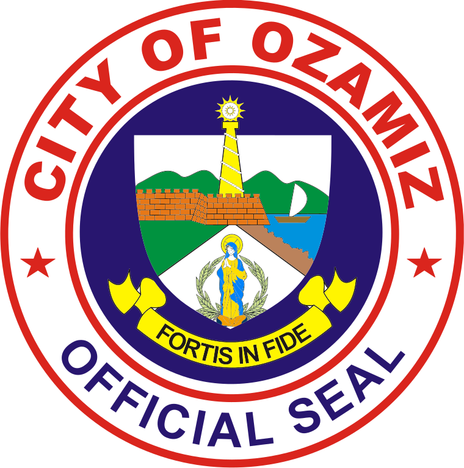

Vision,Mission And Core Values

Our Vision
is to be a leading center for teacher education and a hub for inclusive, sustainable development driven by good governance, with a focus on providing quality education, healthcare, and social services
Our Mission
is to foster inclusive development, peace, and progress, which includes initiatives for rehabilitating individuals, empowering marginalized communities through programs like LAMDAG, and enhancing public services like justice and education.
Core Values
Matinahuron
Matinud-anon
Matinabangon
Mahigugmaon